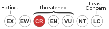

Valencia hispanica: Valencia toothcarp or Samaruc
The Valencia hispanica or Valencia toothcarp (Valencian: samaruc) is a species of freshwater fish in the family Valenciidae endemic to the south of Catalonia and the Valencian Country, Spain. There is at least one historical record of this species from near Perpignan in France but the species has been extirpated from that country.
Its natural habitat are marshes, freshwater springs, coastal freshwater lagoons and acequias which may connect these. It is threatened by pollution and habitat loss.
Conservation status
Critically endangered
Description
It is a small fish of a light brown to yellow colour. Adult males oscillate between 4–8 cm and can be distinguished from females in that the rim of their fins is orangish. Also, females are slightly larger than their male counterparts of the same age.
It is a gregarious fish forming small shoals. The species is carnivorous, feeding on insects, larvae, worms, etc.